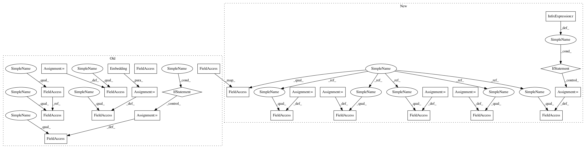

e9aea97df1dc7878827ac193ba75cbea0b3ee351,ludwig/models/modules/sequence_decoders.py,SequenceGeneratorDecoder,__init__,#SequenceGeneratorDecoder#Any#Any#Any#Any#Any#Any#Any#Any#Any#Any#Any#Any#Any#Any#Any#Any#Any#Any#,32
Before Change
self.embedding_size = embedding_size
self.beam_width = beam_width
self.num_layers = num_layers
self.attention_mechanism = attention_mechanism
self.tied_embeddings = tied_embeddings
self.initializer = initializer
self.regularize = regularize
self.is_timeseries = is_timeseries
self.num_classes = num_classes
self.max_sequence_length = max_sequence_length
if is_timeseries:
self.vocab_size = 1
else:
self.vocab_size = self.num_classes
self.embeddings_dec = Embedding(num_classes, embedding_size)
self.decoder_cell = LSTMCell(state_size)
if attention_mechanism:
if attention_mechanism == "bahdanau":
pass
elif attention_mechanism == "luong":
self.attention_mechanism = tfa.seq2seq.LuongAttention(
state_size,
None, // todo tf2: confirm on need
memory_sequence_length=max_sequence_length // todo tf2: confirm inputs or output seq length
)
else:
raise ValueError(
"Attention specificaiton "{}" is invalid. Valid values are "
""bahdanau" or "luong".".format(self.attention_mechanism))
self.decoder_cell = tfa.seq2seq.AttentionWrapper(
self.decoder_cell,
self.attention_mechanism
)
self.sampler = tfa.seq2seq.sampler.TrainingSampler()
self.projection_layer = Dense(
units=num_classes,
use_bias=use_bias,
kernel_initializer=weights_initializer,
bias_initializer=bias_initializer,
kernel_regularizer=weights_regularizer,
bias_regularizer=bias_regularizer,
activity_regularizer=activity_regularizer
)
self.decoder = \
tfa.seq2seq.basic_decoder.BasicDecoder(self.decoder_cell,
self.sampler,
After Change
class SequenceGeneratorDecoder(Layer):
def __init__(
self,
num_classes,
cell_type="rnn",
state_size=256,
embedding_size=64,
beam_width=1,
num_layers=1,
attention_mechanism=None,
tied_embeddings=None,
initializer=None,
regularize=True,
is_timeseries=False,
max_sequence_length=0,
use_bias=True,
weights_initializer="glorot_uniform",
bias_initializer="zeros",
weights_regularizer=None,
bias_regularizer=None,
activity_regularizer=None,
**kwargs
):
super(SequenceGeneratorDecoder, self).__init__()
self.cell_type = cell_type
self.state_size = state_size
self.embedding_size = embedding_size
self.beam_width = beam_width
self.num_layers = num_layers
self.attention_mechanism = attention_mechanism
self.tied_embeddings = tied_embeddings
self.initializer = initializer
self.regularize = regularize
self.is_timeseries = is_timeseries
self.num_classes = num_classes
self.max_sequence_length = max_sequence_length
if is_timeseries:
self.vocab_size = 1
else:
self.vocab_size = self.num_classes
self.decoder_embedding = tf.keras.layers.Embedding(
input_dim=output_vocab_size,
output_dim=embedding_dims)
self.dense_layer = tf.keras.layers.Dense(output_vocab_size)
self.decoder_rnncell = tf.keras.layers.LSTMCell(rnn_units)
// Sampler
self.sampler = tfa.seq2seq.sampler.TrainingSampler()
self.attention_mechanism = None
self.rnn_units = rnn_units
print("setting up attention for", attention_mechanism)
if attention_mechanism is not None:
self.attention_mechanism = self.build_attention_mechanism(
attention_mechanism,
dense_units
)
self.decoder_rnncell = self.build_rnn_cell()
self.decoder = tfa.seq2seq.BasicDecoder(self.decoder_rnncell,
sampler=self.sampler,
output_layer=self.dense_layer)
In pattern: SUPERPATTERN
Frequency: 3
Non-data size: 25
Instances
Project Name: uber/ludwig
Commit Name: e9aea97df1dc7878827ac193ba75cbea0b3ee351
Time: 2020-05-05
Author: jimthompson5802@gmail.com
File Name: ludwig/models/modules/sequence_decoders.py
Class Name: SequenceGeneratorDecoder
Method Name: __init__
Project Name: allenai/allennlp
Commit Name: a8f7adae8546cfac4473bd514b0070367d725f2e
Time: 2018-05-13
Author: pradeep.dasigi@gmail.com
File Name: allennlp/models/semantic_parsing/nlvr/nlvr_semantic_parser.py
Class Name: NlvrSemanticParser
Method Name: __init__
Project Name: mozilla/TTS
Commit Name: 0a92c6d5a7601fe0b1d8d5bf53ef1774c15647cc
Time: 2019-03-25
Author: egolge@mozilla.com
File Name: models/tacotron.py
Class Name: Tacotron
Method Name: __init__
Project Name: uber/ludwig
Commit Name: e9aea97df1dc7878827ac193ba75cbea0b3ee351
Time: 2020-05-05
Author: jimthompson5802@gmail.com
File Name: ludwig/models/modules/sequence_decoders.py
Class Name: SequenceGeneratorDecoder
Method Name: __init__